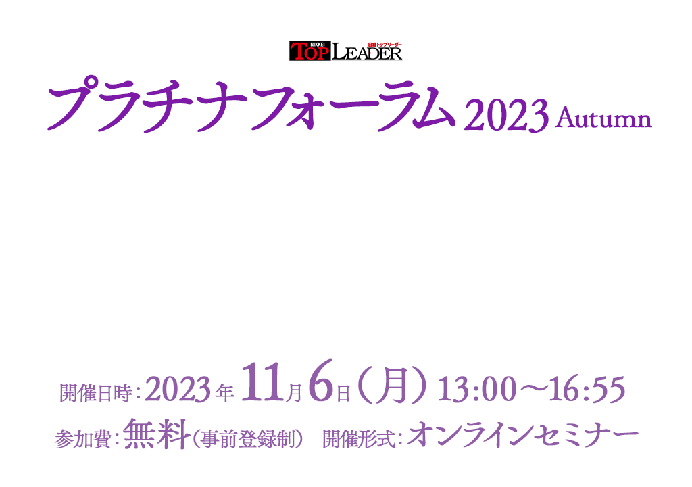
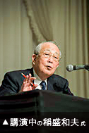

お申し込み受付を
終了しました
新型コロナウイルスの鎮静化、インバウンドの復活もあって経済活動は回復基調にありますが、人手不足、円安、資源高など中堅・中小企業が事業を続けていく上での問題は今だに山積しています。今こそ企業の真価が問われるときです。様々なリスク要因と隣り合わせの時代に、中堅・中小企業はどのように対応をしていくべきか、豪華講師陣の講演にご期待ください。
本セミナーはオンラインセミナー（ライブ配信）です。
開催概要
- 名称
- 日経トップリーダー プラチナフォーラム2023 Autumn
- 日時
- 2023年11月6日（月）13:00～16:55
- 開催形式
- オンラインセミナー
- 主催
- 日経トップリーダー
- 協賛
-
- M＆Aベストパートナーズ、
- NTT東日本、
- SB C＆S
- （ABC順）
- 受講料
- 無料（事前登録制）
プログラム
※講演者や講演時間など、プログラムは変更になる場合がございます。予めご了承ください。
-
13:00～13:05
-
主催者挨拶
-
13:05～14:05
-
【基調講演】
「日高屋があってよかった」と言われる経営
ハイデイ日高
代表取締役 会長 神田 正 氏数々の職を経て、ラーメン店で働き始めたのは22歳のとき。32歳で独立、一代で首都圏に439店舗を展開する中華料理チェーンを育て上げた。
貧しく学歴もなく、店を出してからも人集めに苦労したからこそ謙虚な姿勢でどんな苦言や意見にも素直に耳を貸せるのが神田正会長の強みなのでしょう。
「日高屋があってよかった」。そんな店づくり、組織づくりを目指し、経営者として過ごしてきた50年を振り返っていただきます。
-
14:10～14:50
-
【ソリューション講演①】
中堅・中小企業が成長するための選択
徹底討論 M&Aの表と裏を知るM＆Aベストパートナーズ
代表取締役副社長 松尾 直樹 氏＜モデレーター＞
日経トップリーダー
発行人 北方 雅人2010年代から市民権を得始めたM＆A。
後継者問題の解決手段として注目を浴び、市場が拡大するにつれて多くの仲介会社がせめぎ合うなか、成長型M＆Aを提唱して急成長しているのがM＆Aベストパートナーズ。
同社代表取締役副社長 松尾氏が日経トップリーダー発行人北方雅人との対談で、現在の市場動向と成長の選択肢としてのM＆Aについて語ります。
-
14:55～15:25
-
【ソリューション講演②】
経営トップが推進すべき本当のクラウド活用術
～利益拡大に向けた本質的なビジネスモデルチェンジへ～NTT東日本
サービスクリエイション部
クラウド・サーバ＆アプリケーションセンタ
ストラテジー＆コンサルティング部門
シニアスペシャリスト 白鳥 翔太 氏企業システムのクラウド移行は完了したものの、クラウドのメリットを感じられていない、コスト削減は進んでいるが本質的なビジネスモデル転換までいたってない、と言った経営者の声を耳にします。
中堅中小、スタートアップ企業で事業を成功させている企業は、真のクラウド活用を推し進めています。
AWS、Azureなどのクラウドを活用したDXの成功事例をあわせてご説明いたします。
-
15:30～16:00
-
【ソリューション講演③】
DX推進の鍵はAI活用にあり ChatGPTから始める令和版働き方改革のススメ
SB C＆S
ICT事業本部 技術本部 第1技術部 4課 土肥 達郎 氏近年、『ChatGPT』をはじめとした生成AIの台頭により我々の働き方が大きく変わろうとしており、多くの企業がすでに導入を開始しております。本セッションでは、デジタルトランスフォーメーション（DX）の成功に向けた鍵として、AI活用の重要性に焦点を当て、AIの導入が組織や個人の生産性向上、業務効率化、クリエイティビティの促進にどのように寄与するかについて解説し、実際の導入事例と成果を紹介します。
-
16:05～16:55
-
【特別講演】
稲盛和夫氏に学ぶ「リーダーの働き方」
鹿児島大学稲盛アカデミー客員教授
元京セラ稲盛ライブラリー 粕谷 昌志 氏 京セラや第二電電（現KDDI）を創業し、日本航空を再生させるなど多くの功績を残した稲盛和夫氏。今回は、稲盛氏が中国の経営哲学報告会で、自らの経験をもとに「リーダーの働き方」について語った貴重な映像をご覧いただきます。稲盛氏はそこで何を語ったのか――。社内で長く稲盛氏のスタッフを務めてきた粕谷昌志氏に、間近で実際に見聞きした稲盛氏の実際の働き方を語っていただきます。
お申し込み
■Webセミナーご受講に際し、以下の事項に同意のうえお申込ください。
- 視聴に必要なURLは、登録完了メールでご確認ください。
また、MyPageからも確認ができます。
URLはセミナーに参加する方のみ利用可能とし、再配布を禁止します。 - 受講者は、動画を録画・キャプチャーすることは一切できません。
もし、発見した場合、事務局は削除を要求できることとします。また、SNSなどへのアップも禁止します。 - セミナーの内容や受講者の個人情報などはセミナー内のみとし、口外しないでください。
- システムトラブルなどにより、画像・音声に乱れが生じた場合も対応出来かねますのでご自身でご調整ください。
- 配信中、異常と思われる接続を発見した場合、予告なく切断することがあります。
お問い合わせ
日経BP読者サービスセンターセミナー係
お問い合わせお申し込み受付を
終了しました